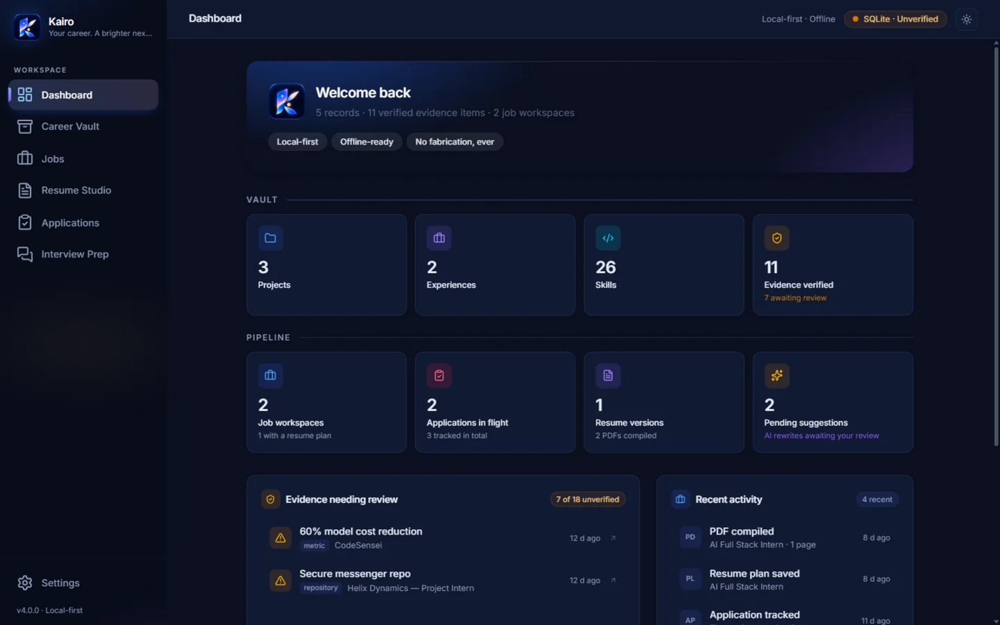
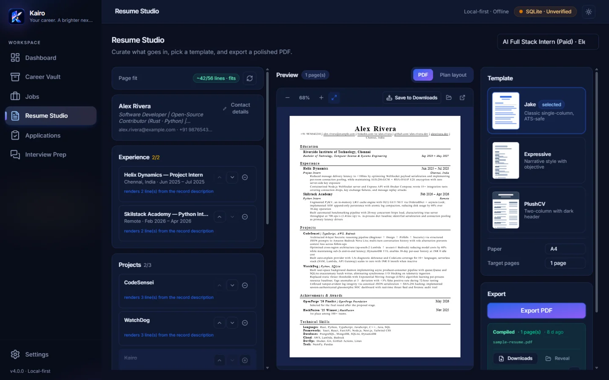

Career Vault
Store each project, role and achievement once — with the evidence behind it. Skills carry a 0–5 confidence, so “read about it in a course” can never claim “production experience”.
open source · MIT · v4.1.0 · windows
Kairo is a local-first career workspace. Store your verified experience once, match it against any job description, and compose a tailored, ATS-safe one-page resume — with AI that rewords but never invents.

Most tools generate plausible text and hope it's true. Kairo starts from what you can prove, and never lets a rewrite drift away from it.
Store each project, role and achievement once — with the evidence behind it. Skills carry a 0–5 confidence, so “read about it in a course” can never claim “production experience”.
Pure functions score every requirement and pick the strongest relevant lines — same input, byte-identical output. The interesting part is deciding, not guessing.
The AI may reword a bullet only within what the evidence supports. Validation gates reject inflation, and you approve or reject every single change.
Three LaTeX templates compiled by Tectonic. Full character escaping, ruled section headings, and a live line estimate that keeps you to one page.
Your data lives in a SQLite database on your machine; API keys go to the OS keyring. There is no Kairo server, no account, and no telemetry.
Any OpenAI-compatible endpoint works — or go fully offline with Ollama and LM Studio, no API key needed. Tailoring is optional either way.
One workspace per application. Every step is inspectable, and nothing moves forward without you.
Requirements are extracted for you — confirm, edit, and weight what matters.
Every requirement lands Covered, Partial or Missing against your Vault.
The strongest evidence-backed lines are ranked, capped to one page, and editable.
One AI pass rewords the plan. You accept, reject, or hand-edit each bullet.
A reproducible PDF plus an immutable version — reopen exactly what you sent, forever.
An AI resume tool is only as good as its worst hallucination. Kairo treats wording as a thin layer over facts — and the facts are yours, with receipts.
This is the actual Kairo interface — Vault, job workspaces, Resume Studio and all — running in your browser on sample data. Nothing to sign up for.

Full app on fixtures · AI tailoring shown in mock mode · your input stays in the tab
Free and open source under MIT. No account, no subscription, no telemetry.
No. Kairo stores everything in a SQLite database in your user directory. AI tailoring calls go directly from your machine to the provider you configure — or to a local model, where nothing leaves at all. There is no Kairo server.
That's the first thing Kairo was designed to prevent. Rewrites are grounded in your evidence notes, checked by validation gates (technology diff, fact coverage, forbidden claim rules), and nothing reaches your resume until you personally accept it.
No. Tailoring is optional. Point Kairo at Ollama or LM Studio and it works fully offline with local models — no key, no cost. Cloud providers work too if you prefer.
It's MIT-licensed open source. There are no paid tiers, no watermarks, no “credits”. The catch is that you review your own resume — Kairo refuses to do it on autopilot.
Windows today; macOS and Linux builds are on the roadmap. The core is Rust and React, so the heavy lifting is already platform-independent.
Your career. A brighter next step.
clarity · direction · opportunity · growth